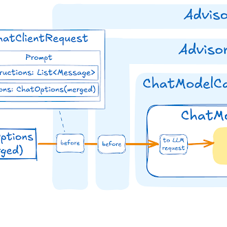

Chat Client API
The ChatClient offers a fluent API for communicating with an AI Model.
It supports both a synchronous and streaming programming model.
|
See the Implementation Notes at the bottom of this document related to the combined use of imperative and reactive programming models in |
The fluent API has methods for building up the constituent parts of a Prompt that is passed to the AI model as input.
The Prompt contains the instructional text to guide the AI model’s output and behavior. From the API point of view, prompts consist of a collection of messages.
The AI model processes two main types of messages: user messages, which are direct inputs from the user, and system messages, which are generated by the system to guide the conversation.
These messages often contain placeholders that are substituted at runtime based on user input to customize the response of the AI model to the user input.
There are also Prompt options that can be specified, such as the name of the AI Model to use and the temperature setting that controls the randomness or creativity of the generated output.
Creating a ChatClient
The ChatClient is created using a ChatClient.Builder object.
You can obtain an autoconfigured ChatClient.Builder instance for any ChatModel Spring Boot autoconfiguration or create one programmatically.
Using an autoconfigured ChatClient.Builder
In the most simple use case, Spring AI provides Spring Boot autoconfiguration, creating a prototype ChatClient.Builder bean for you to inject into your class.
Here is a simple example of retrieving a String response to a simple user request.
@RestController
class MyController {
private final ChatClient chatClient;
public MyController(ChatClient.Builder chatClientBuilder) {
this.chatClient = chatClientBuilder.build();
}
@GetMapping("/ai")
String generation(String userInput) {
return this.chatClient.prompt()
.user(userInput)
.call()
.content();
}
}In this simple example, the user input sets the contents of the user message.
The call() method sends a request to the AI model, and the content() method returns the AI model’s response as a String.
Working with Multiple Chat Models
There are several scenarios where you might need to work with multiple chat models in a single application:
-
Using different models for different types of tasks (e.g., a powerful model for complex reasoning and a faster, cheaper model for simpler tasks)
-
Implementing fallback mechanisms when one model service is unavailable
-
A/B testing different models or configurations
-
Providing users with a choice of models based on their preferences
-
Combining specialized models (one for code generation, another for creative content, etc.)
By default, Spring AI autoconfigures a single ChatClient.Builder bean.
However, you may need to work with multiple chat models in your application.
Here’s how to handle this scenario:
Multiple ChatClients with a Single Model Type
This section covers a common use case where you need to create multiple ChatClient instances that all use the same underlying model type but with different configurations.
You can use the auto-configured ChatClient.Builder as it is prototype-scoped, meaning a new instance is created for each injection point:
@Configuration
class ChatClientConfig {
@Bean
ChatClient defaultChatClient(ChatClient.Builder builder) {
return builder.build();
}
@Bean
ChatClient customChatClient(ChatClient.Builder builder) {
return builder.defaultSystem("You are a helpful assistant.").build();
}
}ChatClients for Different Model Types
When working with multiple AI models, you might be tempted to define separate ChatClient beans by using ChatClient.create(chatModel) or ChatClient.builder(chatModel).
However, doing so bypasses the auto-configured ChatClient.Builder, which means observability and ChatClientBuilderCustomizer beans are ignored.
To retain observability and customizers, you should inject ChatClientBuilderConfigurer to create custom builders.
The ChatClientBuilderConfigurer applies all registered ChatClientBuilderCustomizer beans and wires up observability, mirroring what the auto-configuration does internally.
When multiple ChatModel beans are present in the application context, Spring cannot resolve the ChatModel dependency of the auto-configured ChatClient.Builder bean without ambiguity.
To resolve this, you can mark one of your ChatClient beans as @Primary. You may also need to mark one of your ChatModel beans as @Primary if you are defining them manually, or alternatively, define your own ChatClient.Builder bean to override the auto-configured one.
import io.micrometer.observation.ObservationRegistry;
import org.springframework.ai.anthropic.AnthropicChatModel;
import org.springframework.ai.chat.client.ChatClient;
import org.springframework.ai.chat.client.advisor.ToolCallingAdvisor;
import org.springframework.ai.chat.client.advisor.observation.AdvisorObservationConvention;
import org.springframework.ai.chat.client.observation.ChatClientObservationConvention;
import org.springframework.ai.chat.model.ChatModel;
import org.springframework.ai.model.chat.client.autoconfigure.ChatClientBuilderConfigurer;
import org.springframework.ai.openai.OpenAiChatModel;
import org.springframework.beans.factory.ObjectProvider;
import org.springframework.context.annotation.Bean;
import org.springframework.context.annotation.Configuration;
import org.springframework.context.annotation.Primary;
@Configuration
public class ChatClientConfig {
@Bean
@Primary
public ChatClient openAiChatClient(OpenAiChatModel chatModel, ChatClientBuilderConfigurer configurer,
ObjectProvider<ObservationRegistry> observationRegistry,
ObjectProvider<ChatClientObservationConvention> chatClientObservationConvention,
ObjectProvider<AdvisorObservationConvention> advisorObservationConvention,
ObjectProvider<ToolCallingAdvisor.Builder<?>> toolCallingAdvisorBuilder) {
return buildChatClient(chatModel, configurer, observationRegistry,
chatClientObservationConvention, advisorObservationConvention, toolCallingAdvisorBuilder);
}
@Bean
public ChatClient anthropicChatClient(AnthropicChatModel chatModel, ChatClientBuilderConfigurer configurer,
ObjectProvider<ObservationRegistry> observationRegistry,
ObjectProvider<ChatClientObservationConvention> chatClientObservationConvention,
ObjectProvider<AdvisorObservationConvention> advisorObservationConvention,
ObjectProvider<ToolCallingAdvisor.Builder<?>> toolCallingAdvisorBuilder) {
return buildChatClient(chatModel, configurer, observationRegistry,
chatClientObservationConvention, advisorObservationConvention, toolCallingAdvisorBuilder);
}
private ChatClient buildChatClient(ChatModel chatModel, ChatClientBuilderConfigurer configurer,
ObjectProvider<ObservationRegistry> observationRegistry,
ObjectProvider<ChatClientObservationConvention> chatClientObservationConvention,
ObjectProvider<AdvisorObservationConvention> advisorObservationConvention,
ObjectProvider<ToolCallingAdvisor.Builder<?>> toolCallingAdvisorBuilder) {
ChatClient.Builder builder = ChatClient.builder(chatModel,
observationRegistry.getIfUnique(() -> ObservationRegistry.NOOP),
chatClientObservationConvention.getIfUnique(),
advisorObservationConvention.getIfUnique(),
toolCallingAdvisorBuilder.getIfAvailable());
return configurer.configure(builder).build();
}
}You can then inject these beans into your application components using the @Qualifier annotation:
@Configuration
public class ChatClientExample {
@Bean
CommandLineRunner cli(
@Qualifier("openAiChatClient") ChatClient openAiChatClient,
@Qualifier("anthropicChatClient") ChatClient anthropicChatClient) {
return args -> {
var scanner = new Scanner(System.in);
ChatClient chat;
// Model selection
System.out.println("\nSelect your AI model:");
System.out.println("1. OpenAI");
System.out.println("2. Anthropic");
System.out.print("Enter your choice (1 or 2): ");
String choice = scanner.nextLine().trim();
if (choice.equals("1")) {
chat = openAiChatClient;
System.out.println("Using OpenAI model");
} else {
chat = anthropicChatClient;
System.out.println("Using Anthropic model");
}
// Use the selected chat client
System.out.print("\nEnter your question: ");
String input = scanner.nextLine();
String response = chat.prompt(input).call().content();
System.out.println("ASSISTANT: " + response);
scanner.close();
};
}
}Multiple OpenAI-Compatible API Endpoints
You can create multiple OpenAiChatModel instances using their builders to connect to different OpenAI-compatible APIs.
This is particularly useful when you need to work with multiple providers.
@Service
public class MultiModelService {
private static final Logger logger = LoggerFactory.getLogger(MultiModelService.class);
public void multiClientFlow() {
try {
// Create a new OpenAiChatModel for Groq (Llama3)
OpenAiChatModel groqModel = OpenAiChatModel.builder()
.options(OpenAiChatOptions.builder()
.baseUrl("https://api.groq.com/openai/v1")
.apiKey(System.getenv("GROQ_API_KEY"))
.model("llama3-70b-8192")
.temperature(0.5)
.build())
.build();
// Create a new OpenAiChatModel for GPT-4
OpenAiChatModel gpt4Model = OpenAiChatModel.builder()
.options(OpenAiChatOptions.builder()
.baseUrl("https://api.openai.com")
.apiKey(System.getenv("OPENAI_API_KEY"))
.model("gpt-4")
.temperature(0.7)
.build())
.build();
// Simple prompt for both models
String prompt = "What is the capital of France?";
String groqResponse = ChatClient.builder(groqModel).build().prompt(prompt).call().content();
String gpt4Response = ChatClient.builder(gpt4Model).build().prompt(prompt).call().content();
logger.info("Groq (Llama3) response: {}", groqResponse);
logger.info("OpenAI GPT-4 response: {}", gpt4Response);
}
catch (Exception e) {
logger.error("Error in multi-client flow", e);
}
}
}ChatClient Fluent API
The ChatClient fluent API allows you to create a prompt in three distinct ways using an overloaded prompt method to initiate the fluent API:
-
prompt(): This method with no arguments lets you start using the fluent API, allowing you to build up user, system, and other parts of the prompt. -
prompt(Prompt prompt): This method accepts aPromptargument, letting you pass in aPromptinstance that you have created using the Prompt’s non-fluent APIs. -
prompt(String content): This is a convenience method similar to the previous overload. It takes the user’s text content.
ChatClient Responses
The ChatClient API offers several ways to format the response from the AI Model using the fluent API.
Returning a ChatResponse
The response from the AI model is a rich structure defined by the type ChatResponse.
It includes metadata about how the response was generated and can also contain multiple responses, known as Generations, each with its own metadata.
The metadata includes the number of tokens (each token is approximately 3/4 of a word) used to create the response.
This information is important because hosted AI models charge based on the number of tokens used per request.
An example to return the ChatResponse object that contains the metadata is shown below by invoking chatResponse() after the call() method.
ChatResponse chatResponse = chatClient.prompt()
.user("Tell me a joke")
.call()
.chatResponse();Returning an Entity
You often want to return an entity class that is mapped from the returned String.
The entity() method provides this functionality.
For example, given the Java record:
record ActorFilms(String actor, List<String> movies) {}You can easily map the AI model’s output to this record using the entity() method, as shown below:
ActorFilms actorFilms = chatClient.prompt()
.user("Generate the filmography for a random actor.")
.call()
.entity(ActorFilms.class);There is also an overloaded entity method with the signature entity(ParameterizedTypeReference<T> type) that lets you specify types such as generic Lists:
List<ActorFilms> actorFilms = chatClient.prompt()
.user("Generate the filmography of 5 movies for Tom Hanks and Bill Murray.")
.call()
.entity(new ParameterizedTypeReference<List<ActorFilms>>() {});EntityParamSpec
All three entity() overloads accept an optional Consumer<EntityParamSpec> that enables two independent behaviours:
Provider-Native Structured Output
By default, the JSON schema is appended to the user message as text instructions.
When useProviderStructuredOutput() is set, the schema is instead passed directly to the AI provider API as a structured constraint (equivalent to setting AdvisorParams.ENABLE_NATIVE_STRUCTURED_OUTPUT).
This requires the underlying model to support StructuredOutputChatOptions.
ActorFilms actorFilms = chatClient.prompt()
.user("Generate the filmography for a random actor.")
.call()
.entity(ActorFilms.class, spec -> spec.useProviderStructuredOutput());| Native structured output is not enabled by default because support varies significantly across models and providers. Notable limitations include Ollama models with reasoning/thinking mode (which may return plain text instead of JSON) and OpenAI’s lack of support for top-level array schemas. See Known Limitations for details and workarounds. |
You can still set this globally for all calls via the advisor parameter:
ActorFilms actorFilms = chatClient.prompt()
.advisors(AdvisorParams.ENABLE_NATIVE_STRUCTURED_OUTPUT)
.user("Generate the filmography for a random actor.")
.call()
.entity(ActorFilms.class);Schema Validation with Retry
validateSchema() validates the model’s JSON response against the entity schema before returning it.
If validation fails, the error message is appended to the user prompt and the model is retried, up to maxRepeatAttempts times (default: 3).
This uses StructuredOutputValidationAdvisor internally.
ActorFilms actorFilms = chatClient.prompt()
.user("Generate the filmography for a random actor.")
.call()
.entity(ActorFilms.class, spec -> spec.validateSchema());Both options can be combined:
ActorFilms actorFilms = chatClient.prompt()
.user("Generate the filmography for a random actor.")
.call()
.entity(ActorFilms.class, spec -> spec
.useProviderStructuredOutput()
.validateSchema());
Streaming is not supported when validateSchema() is active.
|
Streaming Responses
The stream() method lets you get an asynchronous response as shown below:
Flux<String> output = chatClient.prompt()
.user("Tell me a joke")
.stream()
.content();You can also stream the ChatResponse using the method Flux<ChatResponse> chatResponse().
In the future, we will offer a convenience method that will let you return a Java entity with the reactive stream() method.
In the meantime, you should use the Structured Output Converter to convert the aggregated response explicitly as shown below.
This also demonstrates the use of parameters in the fluent API that will be discussed in more detail in a later section of the documentation.
var converter = new BeanOutputConverter<>(new ParameterizedTypeReference<List<ActorsFilms>>() {});
Flux<String> flux = this.chatClient.prompt()
.user(u -> u.text("""
Generate the filmography for a random actor.
{format}
""")
.param("format", this.converter.getFormat()))
.stream()
.content();
String content = this.flux.collectList().block().stream().collect(Collectors.joining());
List<ActorsFilms> actorFilms = this.converter.convert(this.content);Prompt Templates
The ChatClient fluent API lets you provide user and system text as templates with variables that are replaced at runtime.
String answer = ChatClient.create(chatModel).prompt()
.user(u -> u
.text("Tell me the names of 5 movies whose soundtrack was composed by {composer}")
.param("composer", "John Williams"))
.call()
.content();Internally, the ChatClient uses the PromptTemplate class to handle the user and system text and replace the variables with the values provided at runtime relying on a given TemplateRenderer implementation.
By default, Spring AI uses the StTemplateRenderer implementation, which is based on the open-source StringTemplate engine developed by Terence Parr.
Spring AI also provides a NoOpTemplateRenderer for cases where no template processing is desired.
The TemplateRenderer configured directly on the ChatClient (via .templateRenderer()) applies only to the prompt content defined directly in the ChatClient builder chain (e.g., via .user(), .system()).
It does not affect templates used internally by Advisors like QuestionAnswerAdvisor, which have their own template customization mechanisms (see Custom Advisor Templates).
|
If you’d rather use a different template engine, you can provide a custom implementation of the TemplateRenderer interface directly to the ChatClient. You can also keep using the default StTemplateRenderer, but with a custom configuration.
For example, by default, template variables are identified by the {} syntax.
If you’re planning to include JSON in your prompt, you might want to use a different syntax to avoid conflicts with JSON syntax. For example, you can use the < and > delimiters.
String answer = ChatClient.create(chatModel).prompt()
.user(u -> u
.text("Tell me the names of 5 movies whose soundtrack was composed by <composer>")
.param("composer", "John Williams"))
.templateRenderer(StTemplateRenderer.builder().startDelimiterToken('<').endDelimiterToken('>').build())
.call()
.content();call() return values
After specifying the call() method on ChatClient, there are a few different options for the response type.
-
String content(): returns the String content of the response -
ChatResponse chatResponse(): returns theChatResponseobject that contains multiple generations and also metadata about the response, for example how many token were used to create the response. -
ChatClientResponse chatClientResponse(): returns aChatClientResponseobject that contains theChatResponseobject and the ChatClient execution context, giving you access to additional data used during the execution of advisors (e.g. the relevant documents retrieved in a RAG flow). -
entity()to return a Java type-
entity(ParameterizedTypeReference<T> type): used to return aCollectionof entity types. -
entity(Class<T> type): used to return a specific entity type. -
entity(StructuredOutputConverter<T> structuredOutputConverter): used to specify an instance of aStructuredOutputConverterto convert aStringto an entity type. -
entity(ParameterizedTypeReference<T> type, Consumer<EntityParamSpec> spec): like above, with optional EntityParamSpec configuration. -
entity(Class<T> type, Consumer<EntityParamSpec> spec): like above, with optional EntityParamSpec configuration. -
entity(StructuredOutputConverter<T> converter, Consumer<EntityParamSpec> spec): like above, with optional EntityParamSpec configuration.
-
-
responseEntity()to return both theChatResponseand a Java type. This is useful when you need access to both the complete AI model response (with metadata and generations) and the structured output entity in a single call.-
responseEntity(Class<T> type): used to return aResponseEntitycontaining both the completeChatResponseobject and a specific entity type. -
responseEntity(Class<T> type, Consumer<EntityParamSpec> spec): like above, with optional EntityParamSpec configuration. -
responseEntity(ParameterizedTypeReference<T> type): used to return aResponseEntitycontaining both the completeChatResponseobject and aCollectionof entity types. -
responseEntity(ParameterizedTypeReference<T> type, Consumer<EntityParamSpec> spec): like above, with optional EntityParamSpec configuration. -
responseEntity(StructuredOutputConverter<T> structuredOutputConverter): used to return aResponseEntitycontaining both the completeChatResponseobject and an entity converted using a specifiedStructuredOutputConverter. -
responseEntity(StructuredOutputConverter<T> converter, Consumer<EntityParamSpec> spec): like above, with optional EntityParamSpec configuration.
-
You can also invoke the stream() method instead of call().
Calling the call() method does not actually trigger the AI model execution. Instead, it only instructs Spring AI whether to use synchronous or streaming calls.
The actual AI model invocation occurs when methods such as content(), chatResponse(), and responseEntity() are called.
|
stream() return values
After specifying the stream() method on ChatClient, there are a few options for the response type:
-
Flux<String> content(): Returns aFluxof the string being generated by the AI model. -
Flux<ChatResponse> chatResponse(): Returns aFluxof theChatResponseobject, which contains additional metadata about the response. -
Flux<ChatClientResponse> chatClientResponse(): returns aFluxof theChatClientResponseobject that contains theChatResponseobject and the ChatClient execution context, giving you access to additional data used during the execution of advisors (e.g. the relevant documents retrieved in a RAG flow).
Message Metadata
The ChatClient supports adding metadata to both user and system messages. Metadata provides additional context and information about messages that can be used by the AI model or downstream processing.
Adding Metadata to User Messages
You can add metadata to user messages using the metadata() methods:
// Adding individual metadata key-value pairs
String response = chatClient.prompt()
.user(u -> u.text("What's the weather like?")
.metadata("messageId", "msg-123")
.metadata("userId", "user-456")
.metadata("priority", "high"))
.call()
.content();
// Adding multiple metadata entries at once
Map<String, Object> userMetadata = Map.of(
"messageId", "msg-123",
"userId", "user-456",
"timestamp", System.currentTimeMillis()
);
String response = chatClient.prompt()
.user(u -> u.text("What's the weather like?")
.metadata(userMetadata))
.call()
.content();Adding Metadata to System Messages
Similarly, you can add metadata to system messages:
// Adding metadata to system messages
String response = chatClient.prompt()
.system(s -> s.text("You are a helpful assistant.")
.metadata("version", "1.0")
.metadata("model", "gpt-4"))
.user("Tell me a joke")
.call()
.content();Default Metadata Support
You can also configure default metadata at the ChatClient builder level:
@Configuration
class Config {
@Bean
ChatClient chatClient(ChatClient.Builder builder) {
return builder
.defaultSystem(s -> s.text("You are a helpful assistant")
.metadata("assistantType", "general")
.metadata("version", "1.0"))
.defaultUser(u -> u.text("Default user context")
.metadata("sessionId", "default-session"))
.build();
}
}Metadata Validation
The ChatClient validates metadata to ensure data integrity:
-
Metadata keys cannot be null or empty
-
Metadata values cannot be null
-
When passing a Map, neither keys nor values can contain null elements
// This will throw an IllegalArgumentException
chatClient.prompt()
.user(u -> u.text("Hello")
.metadata(null, "value")) // Invalid: null key
.call()
.content();
// This will also throw an IllegalArgumentException
chatClient.prompt()
.user(u -> u.text("Hello")
.metadata("key", null)) // Invalid: null value
.call()
.content();Using Defaults
Creating a ChatClient with a default system text in an @Configuration class simplifies runtime code.
By setting defaults, you only need to specify the user text when calling ChatClient, eliminating the need to set a system text for each request in your runtime code path.
Default System Text
In the following example, we will configure the system text to always reply in a pirate’s voice.
To avoid repeating the system text in runtime code, we will create a ChatClient instance in a @Configuration class.
@Configuration
class Config {
@Bean
ChatClient chatClient(ChatClient.Builder builder) {
return builder.defaultSystem("You are a friendly chat bot that answers question in the voice of a Pirate")
.build();
}
}and a @RestController to invoke it:
@RestController
class AIController {
private final ChatClient chatClient;
AIController(ChatClient chatClient) {
this.chatClient = chatClient;
}
@GetMapping("/ai/simple")
public Map<String, String> completion(@RequestParam(value = "message", defaultValue = "Tell me a joke") String message) {
return Map.of("completion", this.chatClient.prompt().user(message).call().content());
}
}When calling the application endpoint via curl, the result is:
❯ curl localhost:8080/ai/simple
{"completion":"Why did the pirate go to the comedy club? To hear some arrr-rated jokes! Arrr, matey!"}Default System Text with parameters
In the following example, we will use a placeholder in the system text to specify the voice of the completion at runtime instead of design time.
@Configuration
class Config {
@Bean
ChatClient chatClient(ChatClient.Builder builder) {
return builder.defaultSystem("You are a friendly chat bot that answers question in the voice of a {voice}")
.build();
}
}@RestController
class AIController {
private final ChatClient chatClient;
AIController(ChatClient chatClient) {
this.chatClient = chatClient;
}
@GetMapping("/ai")
Map<String, String> completion(@RequestParam(value = "message", defaultValue = "Tell me a joke") String message, String voice) {
return Map.of("completion",
this.chatClient.prompt()
.system(sp -> sp.param("voice", voice))
.user(message)
.call()
.content());
}
}When calling the application endpoint via httpie, the result is:
http localhost:8080/ai voice=='Robert DeNiro'
{
"completion": "You talkin' to me? Okay, here's a joke for ya: Why couldn't the bicycle stand up by itself? Because it was two tired! Classic, right?"
}Other defaults
At the ChatClient.Builder level, you can specify the default prompt configuration.
-
defaultOptions(ChatOptions chatOptions): Pass in either portable options defined in theChatOptionsclass or model-specific options such as those inOpenAiChatOptions. For more information on model-specificChatOptionsimplementations, refer to the JavaDocs. -
defaultTools(Object… tools): Register one or more default tools that will be available to every request. Accepts a heterogeneous mix ofToolCallback,ToolCallbackProvider, or POJOs with@Toolannotated methods. -
defaultToolContext(Map<String, Object> toolContext): Set a default context for tool executions. -
defaultSystem(String text),defaultSystem(Resource text),defaultSystem(Consumer<PromptSystemSpec> systemSpecConsumer): These methods let you define the default system text. -
defaultUser(String text),defaultUser(Resource text),defaultUser(Consumer<UserSpec> userSpecConsumer): These methods let you define the user text. TheConsumer<UserSpec>allows you to use a lambda to specify the user text and any default parameters. -
defaultTemplateRenderer(TemplateRenderer templateRenderer): Set a defaultTemplateRendererfor prompt templates. -
defaultAdvisors(Advisor… advisor),defaultAdvisors(List<Advisor> advisors): Advisors allow modification of the data used to create thePrompt. TheQuestionAnswerAdvisorimplementation enables the pattern ofRetrieval Augmented Generationby appending the prompt with context information related to the user text. -
defaultAdvisors(Consumer<AdvisorSpec> advisorSpecConsumer): This method allows you to define aConsumerto configure multiple advisors using theAdvisorSpec. Advisors can modify the data used to create the finalPrompt. TheConsumer<AdvisorSpec>lets you specify a lambda to add advisors, such asQuestionAnswerAdvisor, which supportsRetrieval Augmented Generationby appending the prompt with relevant context information based on the user text.
You can override these defaults at runtime using the corresponding methods without the default prefix.
-
options(ChatOptions.Builder optionsCustomizer) -
tools(Object… tools) -
toolContext(Map<String, Object> toolContext) -
messages(Message… messages),messages(List<Message> messages) -
system(String text),system(Resource text),system(Consumer<PromptSystemSpec> systemSpecConsumer) -
user(String text),user(Resource text),user(Consumer<UserSpec> userSpecConsumer) -
templateRenderer(TemplateRenderer templateRenderer) -
advisors(Advisor… advisor),advisors(List<Advisor> advisors) -
advisors(Consumer<AdvisorSpec> advisorSpecConsumer)

Mutating the ChatClient
You can create a new ChatClient (or ChatClientRequestSpec) with settings replicated from an existing one using the mutate() method:
-
On
ChatClient:Builder mutate()returns aChatClient.Builderinitialized with the client’s default settings. -
On
ChatClientRequestSpec:Builder mutate()returns aChatClient.Builderinitialized with the request’s current settings.
This is useful for creating derivative clients or requests without redefining all options.
Advisors
The Advisors API provides a flexible and powerful way to intercept, modify, and enhance AI-driven interactions in your Spring applications.
A common pattern when calling an AI model with user text is to append or augment the prompt with contextual data.
This contextual data can be of different types. Common types include:
-
Your own data: This is data the AI model hasn’t been trained on. Even if the model has seen similar data, the appended contextual data takes precedence in generating the response.
-
Conversational history: The chat model’s API is stateless. If you tell the AI model your name, it won’t remember it in subsequent interactions. Conversational history must be sent with each request to ensure previous interactions are considered when generating a response.
Advisor Configuration in ChatClient
The ChatClient fluent API provides an AdvisorSpec interface for configuring advisors.
This interface offers methods to add parameters, set multiple parameters at once, and add one or more advisors to the chain.
interface AdvisorSpec {
AdvisorSpec param(String k, Object v);
AdvisorSpec params(Map<String, Object> p);
AdvisorSpec advisors(Advisor... advisors);
AdvisorSpec advisors(List<Advisor> advisors);
}| The order in which advisors are added to the chain is crucial, as it determines the sequence of their execution. Each advisor modifies the prompt or the context in some way, and the changes made by one advisor are passed on to the next in the chain. |
ChatClient.builder(chatModel)
.build()
.prompt()
.advisors(a -> a
.advisors(
MessageChatMemoryAdvisor.builder(chatMemory).build(),
QuestionAnswerAdvisor.builder(vectorStore).build()
)
.param(ChatMemory.CONVERSATION_ID, conversationId))
.user(userText)
.call()
.content();In this configuration, the MessageChatMemoryAdvisor will be executed first, adding the conversation history to the prompt.
Then, the QuestionAnswerAdvisor will perform its search based on the user’s question and the added conversation history, potentially providing more relevant results.
ChatMemory.CONVERSATION_ID must be supplied via .param() on every call that uses a memory advisor. Omitting it throws an IllegalArgumentException at runtime.
|
Retrieval Augmented Generation
Refer to the Retrieval Augmented Generation guide.
Logging
The SimpleLoggerAdvisor is an advisor that logs the request and response data of the ChatClient.
This can be useful for debugging and monitoring your AI interactions.
| Spring AI supports observability for LLM and vector store interactions. Refer to the Observability guide for more information. |
To enable logging, add the SimpleLoggerAdvisor to the advisor chain when creating your ChatClient.
It’s recommended to add it toward the end of the chain:
ChatResponse response = ChatClient.create(chatModel).prompt()
.advisors(new SimpleLoggerAdvisor())
.user("Tell me a joke?")
.call()
.chatResponse();To see the logs, set the logging level for the advisor package to DEBUG:
logging.level.org.springframework.ai.chat.client.advisor=DEBUG
Add this to your application.properties or application.yaml file.
You can customize what data from AdvisedRequest and ChatResponse is logged by using the following constructor:
SimpleLoggerAdvisor(
Function<ChatClientRequest, String> requestToString,
Function<ChatResponse, String> responseToString,
int order
)Example usage:
SimpleLoggerAdvisor customLogger = new SimpleLoggerAdvisor(
request -> "Custom request: " + request.prompt().getUserMessage(),
response -> "Custom response: " + response.getResult(),
0
);This allows you to tailor the logged information to your specific needs.
| Be cautious about logging sensitive information in production environments. |
Tool Calling
The ChatClient always auto-registers a ToolCallingAdvisor in the advisor chain unless auto-registration is explicitly disabled (see below).
This ensures that tools injected dynamically at runtime by another advisor are handled correctly, even when no static tools are configured on the call.
String response = ChatClient.builder(chatModel)
.build()
.prompt("What day is tomorrow?")
.tools(new DateTimeTools()) // ToolCallingAdvisor is auto-registered
.call()
.content();The ToolCallingAdvisor is registered at Ordered.HIGHEST_PRECEDENCE + 300 by default.
Disabling Auto-Registration
Globally (all calls)
Set spring.ai.chat.client.tool-calling.enabled=false to disable auto-registration for every call made from the auto-configured ChatClient:
spring.ai.chat.client.tool-calling.enabled=falseWhen this property is set, tools are still sent to the AI model as definitions, but tool calls in the response are not executed automatically. Use user-controlled tool execution to drive the loop yourself.
Per call
You can disable auto-registration for a single call using AdvisorParams.toolCallingAdvisorAutoRegister(false):
chatClient.prompt("What day is tomorrow?")
.tools(new DateTimeTools())
.advisors(AdvisorParams.toolCallingAdvisorAutoRegister(false))
.call()
.content();Or you can provide your own ToolCallingAdvisor (or any other advisor implementing ToolAdvisor) — in that case auto-registration is suppressed automatically because the chain already contains a ToolAdvisor.
You can pass a custom advisor via .advisors():
chatClient.prompt("What day is tomorrow?")
.tools(new DateTimeTools())
.advisors(customAdvisor) // auto-registration suppressed
.call()
.content();Customizing the Default ToolCallingAdvisor
The spring.ai.chat.client.tool-calling.* properties control the auto-configured ToolCallingAdvisor:
| Property | Default | Description |
|---|---|---|
|
|
Set to |
|
|
Position of the auto-registered |
Spring Boot: advisor order property
The simplest way to tune the auto-registered advisor is through the spring.ai.chat.client.tool-calling.advisor-order property.
It controls where in the advisor chain the ToolCallingAdvisor is inserted:
spring.ai.chat.client.tool-calling.advisor-order=0The value must be lower than the order of any advisor that should run inside the tool-call loop (i.e., repeated on every iteration), and higher than any advisor that should run outside it (i.e., executed only once per user request).
The default is ToolCallingAdvisor.DEFAULT_ORDER.
Spring Boot: user-controlled tool execution
To observe each iteration of the tool-calling loop — for example to forward intermediate chunks to a UI — disable the auto-registered advisor per-call and drive the loop yourself using AdvisorParams.toolCallingAdvisorAutoRegister(false).
See User-Controlled Tool Execution — With ChatClient for a complete example.
Spring Boot: custom ToolCallingAdvisor.Builder bean
For deeper customization — for example to supply a custom ToolCallingManager — declare a ToolCallingAdvisor.Builder<?> bean.
Spring Boot’s @ConditionalOnMissingBean on the auto-configured bean means your bean takes precedence:
@Bean
ToolCallingAdvisor.Builder<?> toolCallingAdvisorBuilder(ToolCallingManager myToolCallingManager) {
return ToolCallingAdvisor.builder()
.toolCallingManager(myToolCallingManager)
.advisorOrder(Ordered.LOWEST_PRECEDENCE);
}The ChatClient.Builder bean is then automatically wired with this custom builder.
Without Spring Boot
When not using Spring Boot auto-configuration, pass a pre-configured ToolCallingAdvisor.Builder directly to ChatClient.builder():
ToolCallingManager customManager = ToolCallingManager.builder()
// custom resolver, exception processor, etc.
.build();
ChatClient chatClient = ChatClient
.builder(chatModel, observationRegistry, null, null,
ToolCallingAdvisor.builder().toolCallingManager(customManager))
.build();
// Every prompt that registers tools will use customManager in the auto-registered advisor
chatClient.prompt("What day is tomorrow?")
.tools(new DateTimeTools())
.call()
.content();ToolAdvisor Marker Interface
ToolAdvisor is a marker interface that signals to the ChatClient that the advisor chain already handles tool execution. Implementing this interface on a custom advisor prevents the auto-registration of a second ToolCallingAdvisor.
For more details see Advisor-Controlled Tool Execution.
Chat Memory
The interface ChatMemory represents a storage for chat conversation memory.
It provides methods to add messages to a conversation, retrieve messages from a conversation, and clear the conversation history.
There is currently one built-in implementation: MessageWindowChatMemory.
MessageWindowChatMemory is a chat memory implementation that maintains a window of messages up to a specified maximum size (default: 20 messages).
When the number of messages exceeds this limit, older messages are evicted, but system messages are preserved.
If a new system message is added, all previous system messages are removed from memory.
This ensures that the most recent context is always available for the conversation while keeping memory usage bounded.
The MessageWindowChatMemory is backed by the ChatMemoryRepository abstraction which provides storage implementations for the chat conversation memory.
There are several implementations available, including the InMemoryChatMemoryRepository, JdbcChatMemoryRepository, CassandraChatMemoryRepository, Neo4jChatMemoryRepository, MongoChatMemoryRepository, and RedisChatMemoryRepository.
The ChatMemory.CONVERSATION_ID parameter is required for all memory advisors. It must be supplied on every call via .advisors(a → a.param(ChatMemory.CONVERSATION_ID, conversationId)). Omitting it throws an IllegalArgumentException. There is no default conversation ID.
|
For more details and usage examples, see the Chat Memory documentation.
MemoryAdvisor Marker Interface
MemoryAdvisor is a marker interface extended by BaseChatMemoryAdvisor.
DefaultChatClient uses this marker to detect downstream memory advisors in the auto-registration logic.
Custom memory advisors that do not extend BaseChatMemoryAdvisor but should participate in this detection should implement MemoryAdvisor.
Implementation Notes
The combined use of imperative and reactive programming models in ChatClient is a unique aspect of the API.
Often an application will be either reactive or imperative, but not both.
-
When customizing the HTTP client interactions of a Model implementation, both the RestClient and the WebClient must be configured.
-
Streaming is only supported via the Reactive stack. Imperative applications must include the Reactive stack for this reason (e.g. spring-boot-starter-webflux).
-
Non-streaming is only supportive via the Servlet stack. Reactive applications must include the Servlet stack for this reason (e.g. spring-boot-starter-web) and expect some calls to be blocking.
-
Tool calling is imperative, leading to blocking workflows. This also results in partial/interrupted Micrometer observations (e.g. the ChatClient spans and the tool calling spans are not connected, with the first one remaining incomplete for that reason).
-
The built-in advisors perform blocking operations for standards calls, and non-blocking operations for streaming calls. The Reactor Scheduler used for the advisor streaming calls can be configured via the Builder on each Advisor class.